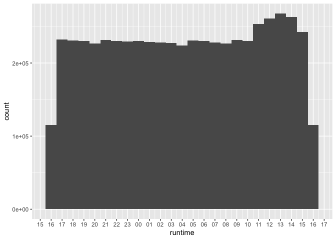

library(tidyverse)
library(duckdb)
library(tinytable)A quick look at City of Melbourne bike data
In writing this note, I use the packages listed below.1 This note was written using Quarto and compiled with RStudio, an integrated development environment (IDE) for working with R. The source code for this note is available here and the latest version of this PDF is here.2
The following code downloads the data and unzips the single file therein. It is cached (cache: true in chunk options) to save time with repeated runs of the code.
t <- tempfile(fileext = ".zip")
url <- str_c("https://opendatasoft-s3.s3.amazonaws.com/",
"downloads/archive/74id-aqj9.zip")
download.file(url, t)
unzip(t)I create a database connection and load the icu extension, which contains time-zone information.3
db <- dbConnect(duckdb::duckdb(), timezone_out = "Australia/Melbourne")
dbExecute(db, "INSTALL icu")
dbExecute(db, "LOAD icu")The following SQL creates bikes_raw, which is fairly unprocessed data. Only RUNDATE is given a type, and this is TIMESTAMP because there is no time zone information in the data.
CREATE OR REPLACE TABLE bikes_raw AS
SELECT *
FROM read_csv('74id-aqj9.csv',
timestampformat='%Y%m%d%H%M%S',
types={'RUNDATE': 'TIMESTAMP'});The following SQL produces some information on the contents of bikes_raw that is shown in Table 1.
SELECT column_name, column_type, max, null_percentage
FROM (SUMMARIZE bikes_raw);bikes_raw)
| column_name | column_type | max | null_percentage |
|---|---|---|---|
| ID | BIGINT | 57 | 0.00 |
| NAME | VARCHAR | Yorkshire Brewery - Wellington St - Collingwood | 0.00 |
| TERMINALNAME | BIGINT | 60052 | 0.00 |
| NBBIKES | BIGINT | 39 | 0.00 |
| NBEMPTYDOCKS | BIGINT | 39 | 0.00 |
| RUNDATE | TIMESTAMP | 2018-09-04 10:00:10 | 0.00 |
| INSTALLED | BOOLEAN | true | 0.00 |
| TEMPORARY | BOOLEAN | false | 0.00 |
| LOCKED | BOOLEAN | true | 0.00 |
| LASTCOMMWITHSERVER | BIGINT | 1507119446229 | 0.00 |
| LATESTUPDATETIME | BIGINT | 1507119264599 | 0.02 |
| REMOVALDATE | VARCHAR | NA | 100.00 |
| INSTALLDATE | BIGINT | 1450061460000 | 22.01 |
| LAT | DOUBLE | -37.79625 | 0.00 |
| LONG | DOUBLE | 144.988507 | 0.00 |
| LOCATION | VARCHAR | (-37.867068, 144.976428) | 0.00 |
The following function is created in R, but generates SQL. The documentation for make_timestamptz() says that it returns “the TIMESTAMP WITH TIME ZONE for the given µs since the epoch.” But it seems the data we have are in milliseconds, not microseconds, so we need to multiply by 1000.
epoch_to_ts <- function(x) {
x <- rlang::as_name(rlang::enquo(x))
dplyr::sql(stringr::str_c("make_timestamptz(", x, " * 1000)"))
}The following code converts rundate to TIMESTAMPTZ assuming the original data are Melbourne times. It also converts lastcommwithserver, latestupdatetime, and installdate to TIMESTAMPTZ. Note that attention needs to be paid to time zones, because the epoch is defined as “the number of seconds since 1970-01-01 00:00:00 UTC”, which would be a different point in time from 1970-01-01 00:00:00 in Melbourne time.
bikes <-
tbl(db, "bikes_raw") |>
rename_with(str_to_lower) |>
select(-installed, -temporary, -removaldate) |>
mutate(rundate = timezone("Australia/Melbourne", rundate),
lastcommwithserver = !!epoch_to_ts(lastcommwithserver),
latestupdatetime = !!epoch_to_ts(latestupdatetime),
installdate = !!epoch_to_ts(installdate)) |>
compute(name = "bikes", overwrite = TRUE)The following SQL produces some information on the contents of bikes that is shown in Table 2.
SELECT column_name, column_type, max, null_percentage
FROM (SUMMARIZE bikes);bikes)
| column_name | column_type | max | null_percentage |
|---|---|---|---|
| id | BIGINT | 57 | 0.00 |
| name | VARCHAR | Yorkshire Brewery - Wellington St - Collingwood | 0.00 |
| terminalname | BIGINT | 60052 | 0.00 |
| nbbikes | BIGINT | 39 | 0.00 |
| nbemptydocks | BIGINT | 39 | 0.00 |
| rundate | TIMESTAMP WITH TIME ZONE | 2018-09-03 20:00:10-04 | 0.00 |
| locked | BOOLEAN | true | 0.00 |
| lastcommwithserver | TIMESTAMP WITH TIME ZONE | 2017-10-04 08:17:26.229-04 | 0.00 |
| latestupdatetime | TIMESTAMP WITH TIME ZONE | 2017-10-04 08:14:24.599-04 | 0.02 |
| installdate | TIMESTAMP WITH TIME ZONE | 2015-12-13 21:51:00-05 | 22.01 |
| lat | DOUBLE | -37.79625 | 0.00 |
| long | DOUBLE | 144.988507 | 0.00 |
| location | VARCHAR | (-37.867068, 144.976428) | 0.00 |
bikes |>
select(lastcommwithserver, latestupdatetime, rundate, installdate) |>
collect(n = 10)| lastcommwithserver | latestupdatetime | rundate | installdate |
|---|---|---|---|
| 2017-04-22 13:42:46.01 | 2017-04-22 13:42:45.029 | 2017-04-22 13:45:06 | 2011-08-19 13:30:00 |
| 2017-04-22 13:43:51.727 | 2017-04-22 13:36:17.573 | 2017-04-22 13:45:06 | NA |
| 2017-04-22 13:33:35.231 | 2017-04-22 13:33:33.615 | 2017-04-22 13:45:06 | NA |
| 2017-04-22 13:36:58.661 | 2017-04-22 12:51:55.84 | 2017-04-22 13:45:06 | NA |
| 2017-04-22 13:35:03.674 | 2017-04-21 19:56:38.168 | 2017-04-22 13:45:06 | NA |
| 2017-04-22 13:32:35.565 | 2017-04-22 13:18:29.294 | 2017-04-22 13:45:06 | 2012-12-27 08:00:00 |
| 2017-04-22 13:41:32.347 | 2017-04-22 11:55:01.271 | 2017-04-22 13:45:06 | NA |
| 2017-04-22 13:34:42.173 | 2017-04-22 13:34:40.671 | 2017-04-22 13:45:06 | NA |
| 2017-04-22 13:36:33.207 | 2017-04-22 11:49:37.265 | 2017-04-22 13:45:06 | NA |
| 2017-04-22 13:37:50.326 | 2017-04-22 13:37:48.824 | 2017-04-22 13:45:06 | 2010-06-22 12:53:00 |
In making Figure 1, I convert the date component of runtime to the same date (2017-01-01). This facilitates plotting in R, as R has no native “time” type and thus things are easier using date-times. Unfortunately, it seems that all the timestamps in bikes are boring back-end times produced by systems, so there is nothing special about the distribution of these times. More interest plots might come from looking at when bikes are checked out and in (only net checkouts seem to be available) assuming that the data are sufficiently frequent.
bikes |>
mutate(runtime = make_timestamptz(2017L, 1L, 1L,
hour(rundate), minute(rundate),
second(rundate))) |>
ggplot(aes(runtime)) +
geom_histogram(binwidth = 60 * 60) +
scale_x_datetime(date_breaks = "1 hour", date_labels = "%H")

runtime
Footnotes
Execute
install.packages(c("tidyverse", duckdb", "tinytable"))within R to install all the packages you need to run the code in this note.↩︎Some parts of the source code are ugly as I wrangled hurriedly with the output from SQL and LaTeX tables.↩︎
You may need to run
INSTALL icubeforeLOAD icudepending on your DuckDB installation.↩︎